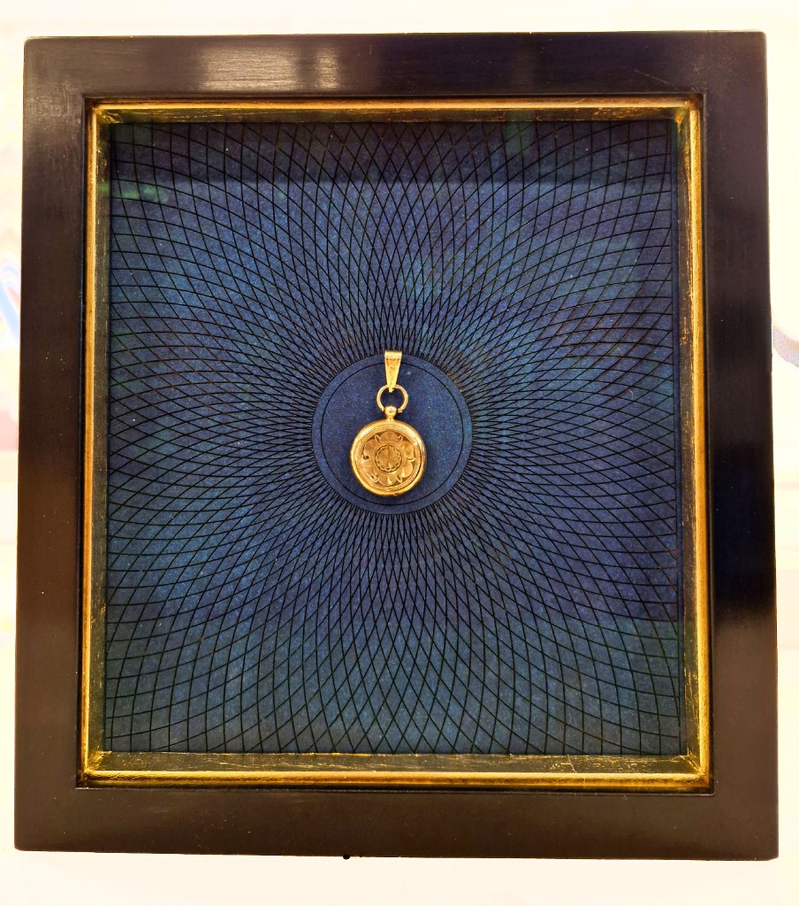
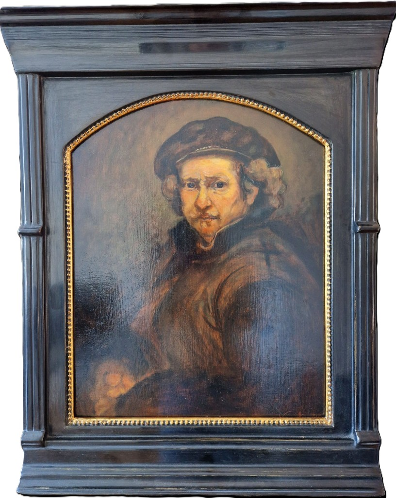
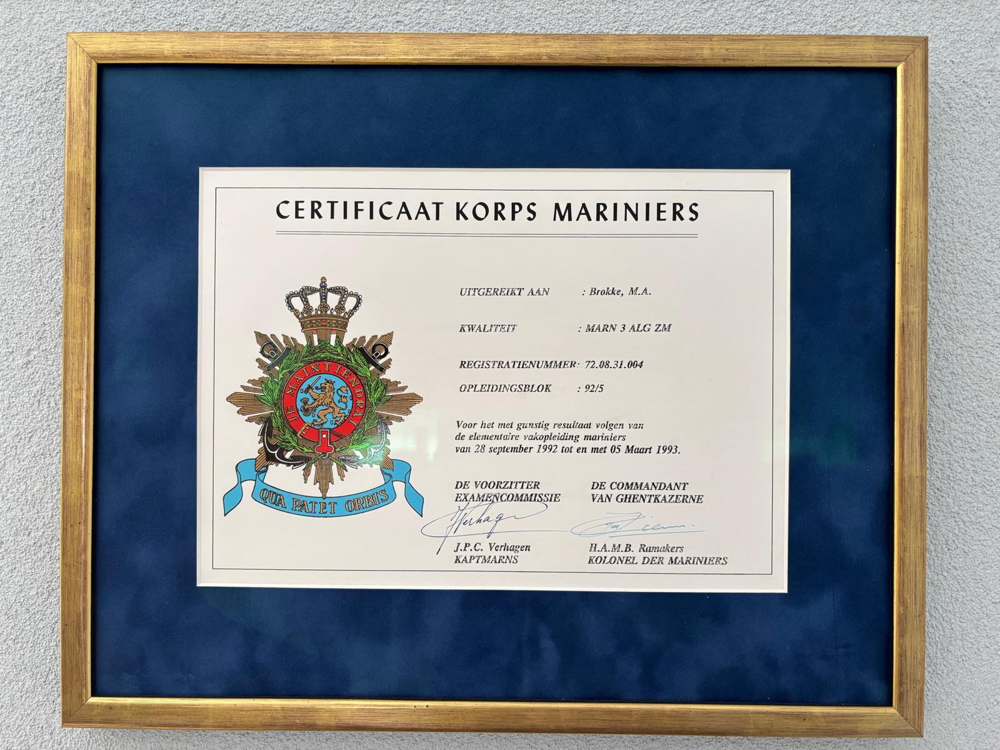
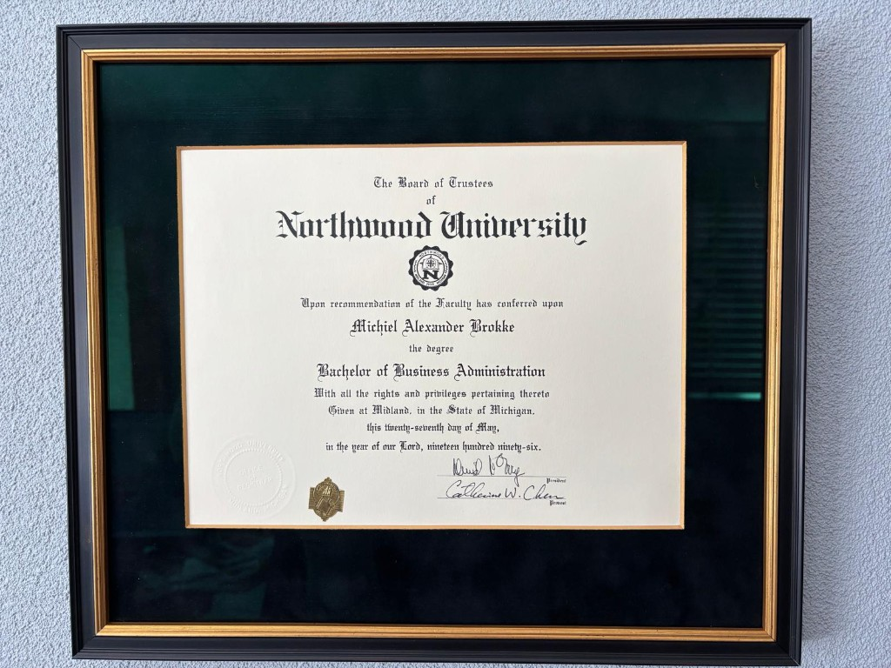
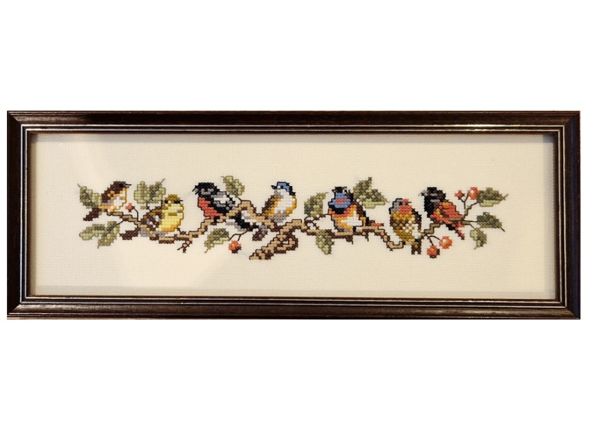
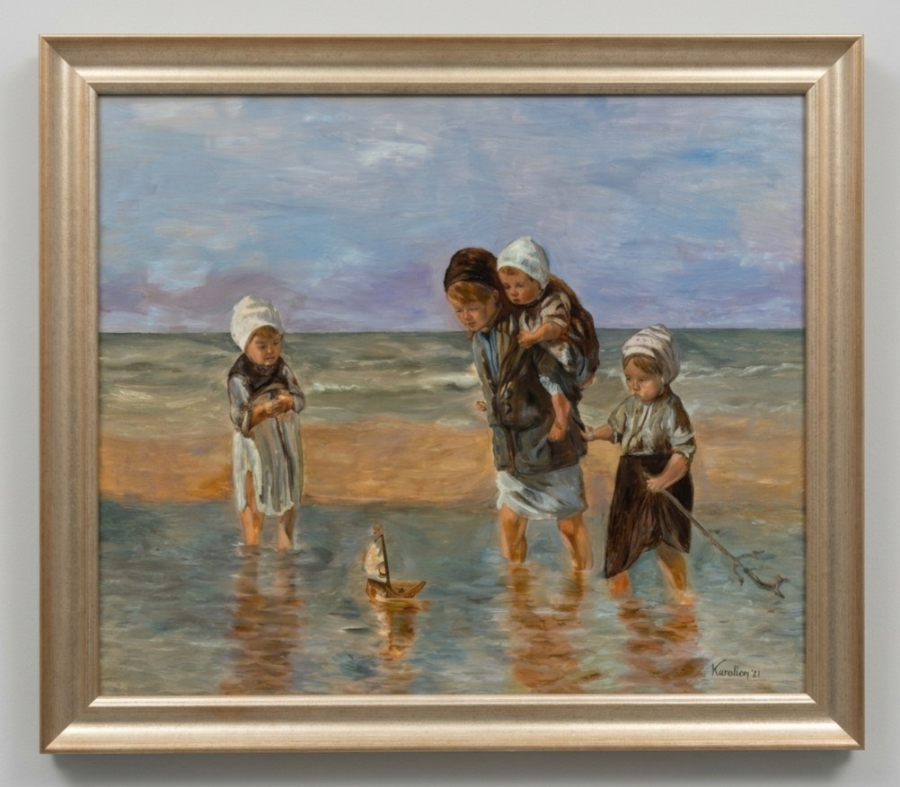
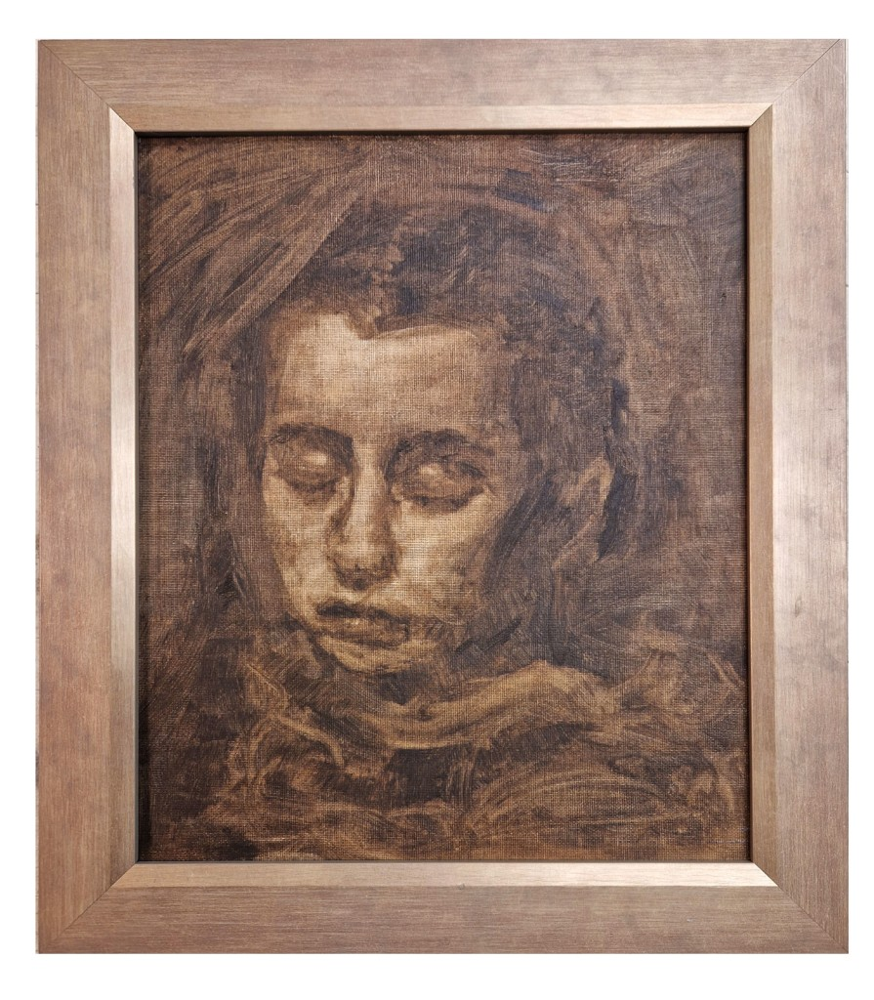
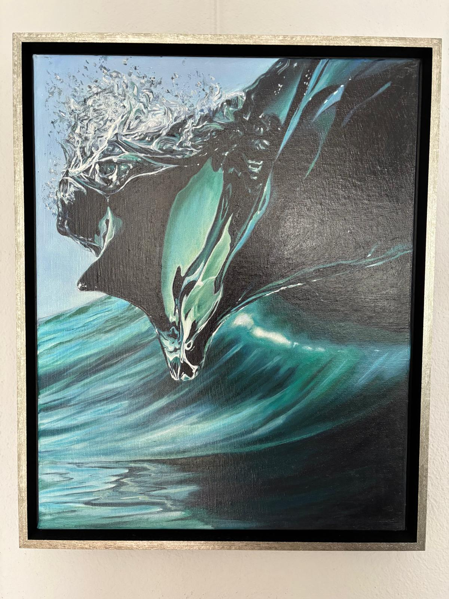

Persoonlijk werk
Dubbel zwevende presentatie die een klein object meer lucht en betekenis geeft.
Portfolio
Een selectie van recente opdrachten en bijzondere inlijstingen. Van klassiek en rijk tot rustig en modern, altijd gekozen in dienst van het werk.


In het portfolio ziet u niet alleen verschillende stijlen, maar ook verschillende keuzes in materiaal, diepte, kleur en afwerking. Soms vraagt een werk om rust en soberheid, soms juist om een rijker kader dat de uitstraling versterkt.
Die variatie is precies waarom het portfolio zo belangrijk is: het laat zien hoe verschillend de oplossingen kunnen zijn wanneer de lijst echt in dienst staat van het werk.
Deze werken laten goed zien hoe materiaalkeuze, profiel, afwerking en context samen het verschil maken.

De tabernakellijst vindt haar oorsprong in de renaissance en is voor mij meer dan een omlijsting. Door de architectonische opbouw — met zuilen, een bekroning en gelaagde diepte — wordt de lijst een verlengstuk van het kunstwerk. Ze brengt rust, nadruk en aanwezigheid, en maakt dat een werk echt tot zijn recht komt.
Voor mij is dit geen stijl uit het verleden, maar een levende traditie. Vanuit mijn kennis van klassieke technieken en materialen werk ik aan lijsten die dezelfde zorg en opbouw dragen als vroeger. Niet als kopie, maar als voortzetting van een ambacht waarin de lijst opnieuw een wezenlijk onderdeel wordt van het werk.
Van een geboortekaartje tot een bijzonder object of restauratie: zorgvuldig ingelijst zodat het verhaal zichtbaar blijft.
Dubbel zwevende presentatie die een klein object meer lucht en betekenis geeft.
Een oplossing voor werk en objecten die diepte nodig hebben om goed tot hun recht te komen.

Deze voorbeelden laten zien hoe diploma's en certificaten met een rustige, nette afwerking goed beschermd en mooi gepresenteerd kunnen worden.

Een strakke presentatie waarin document en lijst mooi in balans blijven.

Een klassieke uitstraling met duidelijke focus op document en afwerking.

Beschermd ingelijst met behoud van leesbaarheid en een verzorgde uitstraling.
Borduurwerk en fijne stukken vragen om zachte montage en rust. Dunne draden, linnen en textiel vragen om andere keuzes dan een dik doek: zuurvrij materiaal, geen overdruk op het werk en een lijst die het stuk beschermt zonder het te domineren. Hieronder een paar voorbeelden uit het atelier.

Combinatie van passe-partout en profiel die past bij een kwetsbaar oppervlak.

Een sobere lijn die kleur en steek van het werk laat spreken.

Een breed stuk kruissteek vraagt om een lijst die de rustige witruimte respecteert en het horizontale karakter versterkt.
Een bredere greep uit inlijstingen en handgemaakte lijsten. Klikken is niet nodig: deze sectie is bedoeld om snel te scannen.





Het laat zien hoe verschillend de oplossingen kunnen zijn en hoe zorgvuldig er wordt gekeken naar werk, materiaal en afwerking.
Van sober en modern tot klassiek en rijk: niet elk werk vraagt om dezelfde omlijsting.
De voorbeelden laten zien dat profiel, kleur en materiaal nooit willekeurig gekozen worden.
Een lijst wordt pas echt goed wanneer het werk sterker gaat spreken in de ruimte waar het komt te hangen.
Het portfolio geeft richting, maar elk werk vraagt uiteindelijk om een eigen keuze. In het atelier bekijken we rustig wat past.